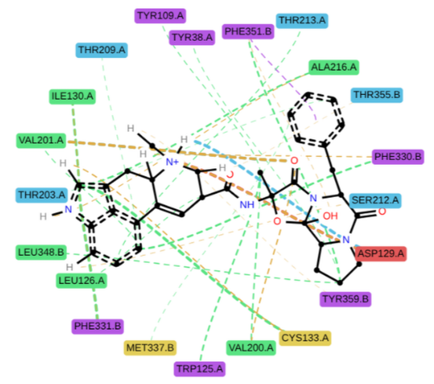
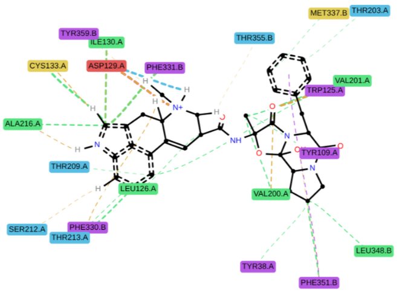

Hey everyone! 👋
Welcome to the Week 4 update of my GSoC journey. This week marked the transition from reading and preparing into actively writing code, and I made good progress on interaction-driven layout logic for protein residues.
📝 PR Status
To start with, I raised a PR to enable exporting LigNetwork data as a NetworkX graph object, which is currently under review. This change lays the groundwork for more versatile layout strategies and integration with external graph tools.
The updates discussed below — involving custom coordinate generation for residues — have not been raised as a PR yet. I’m still refining and testing the logic before pushing it upstream.
🧠 From Random to Reasoned: Residue Placement
My initial approach used spring_layout from NetworkX — a physics-inspired layout algorithm. While it reduced overlap somewhat, it lacked awareness of which residues interacted with which ligand atoms, leading to visually entangled diagrams (see image below):

This made the visualization hard to interpret and missed the goal of contextual clarity.
🧭 A Custom, Interaction-Aware Layout
To address this, I implemented a custom layout function that:
- Analyzes interaction data between ligand atoms and protein residues.
- Calculates direction vectors from the ligand center to interaction points.
- Places residues just outside the ligand, extending outward from their interaction point.
- Handles overlap by rotating nearby residues around the interaction anchor.
This results in a layout where residues surround the ligand more meaningfully, visually aligned with their interactions and spaced to avoid clutter.
Here’s a glimpse at the core logic:
direction = interaction_point[:2] - ligand_center
direction_unit = direction / np.linalg.norm(direction)
residue_pos = interaction_point[:2] + direction_unit * base_offset_distanceFallback placement uses a radial arrangement to fill in the gaps for residues that don’t have clearly defined interaction points, ensuring no residue is left floating or awkwardly positioned.
Although this is a backup option for now, the priority is still to make the NetworkX layout options work by providing more information.

🔧 Implementation Notes
I also implemented:
- Ring centroid detection for π interactions: This helps precisely locate the center of aromatic rings, crucial for accurately positioning residues involved in pi-stacking or T-shaped pi interactions.
- Overlap resolution logic with rotation around interaction points: This feature prevents residues from overlapping by rotating them (by 45 degrees clockwise) around their defined interaction points, ensuring a clear and uncluttered visualization.
- A fallback circular distribution strategy for unpositioned residues: For residues without clear interaction points, this strategy arranges them in a circular pattern, preventing them from being left out and maintaining a coherent diagram.
With this new layout engine, diagrams are now much clearer and biologically meaningful, setting a solid foundation for the interaction visualization system I’ll continue to build.
📆 What’s Next?
Next week, I’ll be focusing on improving NetworkX-based layouts by incorporating interaction-aware edge weights and metadata. I’ll also begin integrating the new coordinate system into the LigNetwork rendering pipeline.
Thanks for reading, and see you next week with more updates! 💻🧬